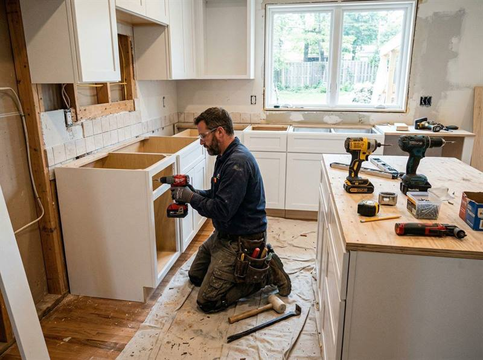

A kitchen remodel affects daily life more than almost any other room upgrade. It impacts cooking, storage, cleanup, traffic flow, and how the household functions every day. That is why preparation matters as much as design.
Separate true needs from nice-to-have upgrades. Layout, storage, workflow, and appliance plan usually matter more than trend details.
Cabinets, countertops, appliances, tile, sinks, and lighting influence cost, lead time, and sequencing.
Set up a temporary food prep area, move essentials, and make a plan for meals, storage, and daily cleanup.
What Slows Kitchen Projects Down?
Late decisions, product delays, hidden wall conditions, electrical changes, plumbing revisions, and changing scope in the middle of the project all create friction. Kitchens move faster when the major decisions are made earlier.
The smoother kitchen remodel is usually the one with fewer open questions when demolition starts.
How to Prepare for a Better Estimate
Bring inspiration, measurements if available, appliance goals, and a realistic range for finish level. The clearer your priorities are, the more useful and accurate the estimate becomes.